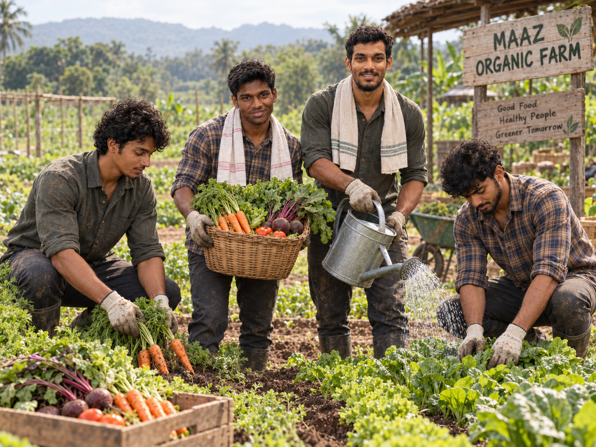

📷 Gallery
Our farm, our real moments.
Explore our farm team, fresh produce and seasonal harvest from Maaz Farms.
Farm Moments
From our farm to your table.
Our gallery showcases the people, produce and fresh harvest behind Maaz Farms.

01
👨🌾 FARM TEAM
Our Farm Team
The people behind Maaz Farms

02
Fresh Organic Mangoes
Seasonal fruit harvest

03
Farm Fresh Tomatoes
Fresh vegetable collection

04
Organic Carrots
Freshly selected produce

05
Fresh Watermelon
Seasonal farm fruit

06
Organic Cucumbers
Farm-fresh vegetables
📸 Your Maaz Farms gallery is ready.
Later, replace
assets/photos/farm-team.jpg
with your own edited farm-team photo.